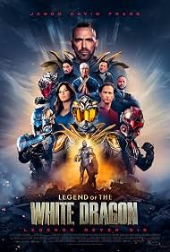

Legend of the White Dragon
Year: 2026 • Genre: Action / Adventure
Legend of the White Dragon is a bittersweet passion project that delivers satisfying fight scenes and a nostalgic experience for Power Rangers fans, but its uneven pacing, excessive flashbacks, and awkward dialogue keep it from reaching its full potential.
Review
Date Watched: October 28, 2026
Where Watched: DVD
Adaptation? No
Quick Hook (First Impression)
As a movie reviewer, I believe it is my responsibility to be as objective and fair as possible when reviewing a film and to try to put my personal feelings on the shelf. However, I will openly admit that Legend of the White Dragon is a difficult movie for me to review objectively. This is the passion project of my childhood hero, Jason David Frank, and, following his tragic death by suicide in 2022, it also became his final project.
I grew up watching Power Rangers, and when this movie was announced back in 2019, I was incredibly excited to see an adult-oriented take on the kind of franchise I grew up with and loved. After years of waiting, the movie finally arrived. Having watched it, I can honestly say that as a fan, I was satisfied, but as a reviewer, I was underwhelmed.
Story / Concept
The concept behind Legend of the White Dragon immediately appealed to me. The idea of taking the action and martial arts elements associated with Power Rangers and presenting them in a more mature setting sounded like a promising way to deliver something familiar while appealing to an older audience.
Unfortunately, while the movie has some enjoyable moments, its storytelling holds it back. The frequent flashbacks, occasionally awkward dialogue, and uneven pacing prevent the story from reaching its full potential.
One of my biggest issues was the movie's reliance on flashbacks. I understand that flashbacks can be an effective way to establish a character's history, explain their motivations, and give the audience a better understanding of the events unfolding in the present. However, it felt like nearly half the movie consisted of flashback sequences, and many of them didn't feel necessary.
This was especially noticeable with the flashbacks involving Jai, the main villain, and his late wife, Vanessa, played by fellow Power Rangers alum Ciara Hanna. I understand why the filmmakers wanted to establish their relationship and show how her death affected Jai. His desire for revenge is central to his character, so the audience needs to understand what motivates him. However, the movie repeatedly returns to different moments in their relationship, and these sequences eventually feel redundant rather than meaningful.
Instead of strengthening the emotional impact of Jai's story, the constant flashbacks hurt the film's pacing and make the narrative feel more drawn out than it needs to be.
Performances
One of the biggest reasons I enjoyed the movie was Jason David Frank's performance as Erik Reed, a disgraced treasure hunter. As someone who grew up watching Frank in Power Rangers, seeing him take on this role was a special experience. He brings a familiar presence to the screen, and I particularly enjoyed seeing him showcase his martial arts abilities throughout the film.
I also enjoyed Jason Faunt's performance as Conner, Erik's friend. Faunt is another Power Rangers alum, and seeing these familiar faces together was a treat for longtime fans of the franchise.
King Bach was another enjoyable part of the cast as Uri, an AI mentor who assists the heroes throughout their journey. Although Uri can be annoying at times, he also proves useful to the characters. The concept of an AI companion guiding the heroes may sound familiar to anyone who has watched other superhero or science-fiction projects, but Bach brings some entertaining moments to the role.
Unfortunately, not every performance worked for me.
Aaron Schoenke, who also directed the film, plays Jai, the main antagonist. Jai has a fairly typical tragic backstory and is driven by his desire for revenge against the White Dragon. While the character's motivations are understandable, the performance sometimes feels lifeless. There are moments when the delivery comes across as though Schoenke is simply reading lines from a script rather than genuinely expressing the emotions the scene requires.
This is particularly disappointing because Jai's personal tragedy is supposed to be one of the emotional foundations of the story. Without a consistently convincing performance, his motivations don't always have the impact they should.
Another disappointment was the use of the late Michael Madsen, who plays Erik Reed's father. His character is in prison, although the movie doesn't make the reason for his imprisonment clear to me, and he only appears in a flashback.
While the scene provides some additional information about Erik's past, it doesn't deliver the emotional weight I expected. Erik becomes visibly emotional while speaking with his father, crying and struggling to get through the conversation, but I didn't find the moment entirely authentic. Despite the emotions being displayed on screen, the scene didn't connect with me in the way it was clearly intended to.
Ultimately, I felt that this appearance could have been handled differently or even left out without significantly affecting the overall story.
Pacing / Flow
The pacing is one of the movie's biggest weaknesses. As mentioned earlier, the excessive use of flashbacks frequently interrupts the main storyline. While some are necessary to establish the characters and their motivations, others feel repetitive and unnecessary. The flashbacks involving Jai and Vanessa are the clearest example, as the movie repeatedly revisits their relationship instead of trusting the audience to understand its significance.
The dialogue also doesn't help matters. Some corny dialogue is to be expected from a project connected to Power Rangers, and I don't necessarily have a problem with that. After all, part of the franchise's charm has always been its occasionally cheesy dialogue and larger-than-life storytelling.
However, there is a difference between dialogue that is charmingly cheesy and dialogue that makes you cringe. Unfortunately, Legend of the White Dragon crosses that line on several occasions. Some exchanges feel awkward enough to pull me out of the experience, making scenes that should be emotionally impactful feel unintentionally silly.
One example is the scene in which Erik's wife confronts him over FaceTime about his absence from their daughter's life. She goes through several different emotions during the conversation, and the scene is clearly meant to communicate her frustration and the emotional damage caused by Erik's absence. However, the dialogue and delivery make the confrontation feel more ridiculous than powerful.
Rather than drawing me into the family's struggles, the scene left me wincing at the execution.
Themes / Meaning
Despite my issues with the film, I appreciate what Legend of the White Dragon represents. For longtime Power Rangers fans, the movie offers an opportunity to see familiar talent explore a different kind of superhero story. It takes some of the action and martial arts elements associated with the franchise and places them in a more mature setting.
More importantly, the film represents the passion project of Jason David Frank, someone who meant a great deal to an entire generation of fans. Knowing that this was his final project adds another layer to the experience, and it is difficult not to appreciate the effort that went into bringing his vision to the screen.
Although I have several criticisms of the finished product, I can still appreciate the significance of the movie and what it means to fans like me who grew up watching Frank.
Final Thoughts
Legend of the White Dragon is a bittersweet passion project that delivers satisfying fight scenes and a nostalgic experience for Power Rangers fans, but its uneven pacing, excessive flashbacks, and awkward dialogue keep it from reaching its full potential.
At the end of the day, Legend of the White Dragon is a movie that left me with mixed feelings. As a longtime Power Rangers fan, I was happy to finally see this project come to fruition. The movie has its moments, Jason David Frank is enjoyable as Erik Reed, and the fight scenes are easily its biggest strength. If there was one thing I expected this movie to get right, it was the action, and I can confidently say that the fight scenes did not disappoint.
Frank does an excellent job showcasing his martial arts background, and the final battle genuinely feels like a Power Rangers fight for an older audience. That was exactly the kind of experience I hoped the movie would deliver, and it was satisfying to see it come together.
Unfortunately, the movie's storytelling, pacing, and dialogue prevent it from being the great experience it could have been. The excessive flashbacks drag down the narrative, some of the performances lack the emotional depth necessary to sell the story, and several scenes come across as unintentionally cringeworthy.
I also want to acknowledge the personal significance of this project. Jason David Frank was a childhood hero of mine, and knowing that this was his final project makes watching it a bittersweet experience. I wish the movie had been stronger overall, but I am still glad I had the opportunity to see him in this role.
Will Legend of the White Dragon win any awards during award season? Probably not. Does it have flaws that keep it from reaching its full potential? Absolutely. But did I find enjoyment in watching it? Yes.
As a fan of Power Rangers and Jason David Frank, I found Legend of the White Dragon enjoyable despite its flaws. As a reviewer, however, I have to acknowledge that the movie left me underwhelmed.
Who is this for? This movie is primarily for longtime Power Rangers fans, particularly those who grew up watching Jason David Frank and want to see him take on a more mature superhero role. Fans who enjoy martial arts action and independent superhero projects may also find something to appreciate here.
Who should skip it? Viewers looking for a tightly written superhero story with consistently strong performances, meaningful emotional moments, and well-paced storytelling may find this movie disappointing. If awkward dialogue and frequent flashbacks are major turnoffs, this probably won't be the movie for you.
One-Sentence Verdict: Legend of the White Dragon is a bittersweet, action-packed passion project that delivers satisfying fight scenes and a nostalgic experience for Power Rangers fans, but its uneven pacing, excessive flashbacks, and awkward dialogue keep it from reaching its full potential.
What Worked
- Jason David Frank's performance as Erik Reed.
- The fight scenes and martial arts action.
- The final fight, which feels like a grown-up Power Rangers battle.
- Jason Faunt and the familiar Power Rangers connections.
- The nostalgia and personal significance of the project.
What Didn't
- The excessive flashbacks, especially those involving Jai and Vanessa.
- The uneven pacing and repetitive storytelling.
- Awkward, cringeworthy dialogue in some scenes.
- Jai's lifeless performance at times.
- Michael Madsen's flashback scene, which lacked the emotional impact I expected.
Adaptation Notes
Adaptation? No
Optional Gut Check
Rewatchable? Maybe
Would I recommend this casually to a friend? Yes
I'd love to hear your thoughts. Agree or disagree? Email me at ross@nobodycritics.com